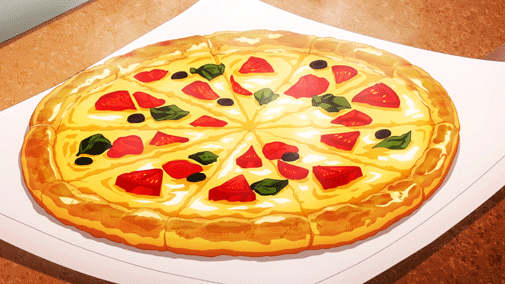

Pizza Recipe

Description
Create delicious homemade pizza with this simple recipe. From scratch, you'll make a flavorful pizza dough, a tangy tomato sauce, and top it off with your favorite ingredients. Perfect for a cozy night in or a fun family meal!
Ingredients
Pizza dough
- 2 1/4 tsp active dry yeast
- 1 1/2 cups warm water
- 4 cups all-purpose flour
- 1 tsp salt
- 2 tbsp olive oil
Pizza Sauce
- 1 can (14 oz) crushed tomatoes
- 2 cloves garlic, minced
- 1 tsp dried oregano
- 1 tsp dried basil
- Salt and pepper to taste
Toppings
- Shredded mozzarella cheese
- Pepperoni slices
- Mushrooms
- Bell peppers
- Onions
- Olives
- Cooked sausage or ground beef
- Fresh basil leaves
Steps
Prepare the Dough:
- In a small bowl, dissolve yeast in warm water. Let sit for 5-10 minutes until foamy.
- In a large mixing bowl, combine flour and salt. Make a well in the center and pour in the yeast mixture and olive oil.
- Stir until a dough forms. Turn out onto a floured surface and knead for 5-7 minutes until smooth and elastic.
- Place the dough in a lightly oiled bowl, cover with a kitchen towel, and let rise in a warm place for 1-2 hours until doubled in size.
Make the Sauce:
- In a saucepan, combine crushed tomatoes, minced garlic, oregano, basil, salt, and pepper.
- Simmer over low heat for 15-20 minutes until slightly thickened. Adjust seasoning to taste.
Assemble and Bake:
- Preheat your oven to 475°F (245°C) and, if available, place a pizza stone in the oven to heat up. Alternatively, prepare a baking sheet by lightly greasing it or lining it with parchment paper. Ensuring the oven and baking surface are properly heated will help achieve a crispy crust for your pizza.
- Divide dough into portions and roll out each portion into a thin circle.
- Transfer dough to a prepared pizza peel or baking sheet.
- Spread sauce over the dough, leaving a small border. Add toppings as desired.
- Carefully transfer pizza to the preheated oven and bake for 12-15 minutes until crust is golden brown and toppings are bubbly.
- Remove from oven, let cool slightly, slice, and serve hot.
Back